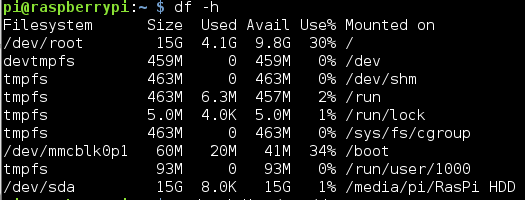

for ext4 FS format use:
mkfs.ext4 /dev/sdc



sudo nano /etc/fstab
for FAT32 format add
/dev/sda /mnt/data vfat defaults 0 0

Now at every boot, the drive will automount at /mnt/data folder

REFERENCES:
http://projpi.com/raspberry-pi-tips-and-hacks/raspberry-pi-automount-usb/